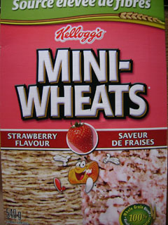
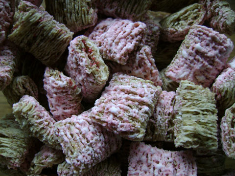

 Miniwheatsはシリアルで、わりとメジャーなのでカナダではどこのスーパーでもシリアルコーナーでみつかるハズ。
このストロベリー味は袋を開けたとたんにストロベリーの甘い香りが漂う。
ポッキーやアイスもストロベリー派の私にはたまらない。
Miniwheatsに限っては、ひとつひとつが大きい一口サイズなのでぽりぽりとそのままつまんで食べている。
ミルクをかけて食べるとせっかくの食感がべちょっとなって楽しめないのだ。
一口サイズの利点を生かして、小腹がすいた時用のおやつに小さなコンテナかジップロックに詰めて出先に持っていったりすることもできる。

 にほんブログ村
にほんブログ村
 にほんブログ村
にほんブログ村